{kind=link}
What it does
- Manage hundreds of agents — run and monitor up to 400 agent processes in one studio. See each role, task, model and result from the fleet view.
- Keep work running — agents continue when the browser closes. After a restart, the studio reconnects to the same processes. Stalled work retries automatically.
- Share one set of tools — agents can read, write, browse, compile, run and debug through the integrated MCP server. Compiler errors go straight back to the agent.
- Coordinate the work — assign tickets, prevent two agents taking the same task, answer questions from one attention list and let agents start helpers.
- Watch and take over — edits appear in the files you have open. Read the work as it happens, use the same debugger and take control at any time.
- Ready in any browser — open Studio and start working. There is nothing to install, configure or maintain, and Wantzel programs compile and run without delay.
See it in use
A fleet at a glance
See each agent's role, model, ticket, current task, elapsed time and token use. Start more agents by role or give the fleet a plan.
{kind=link}
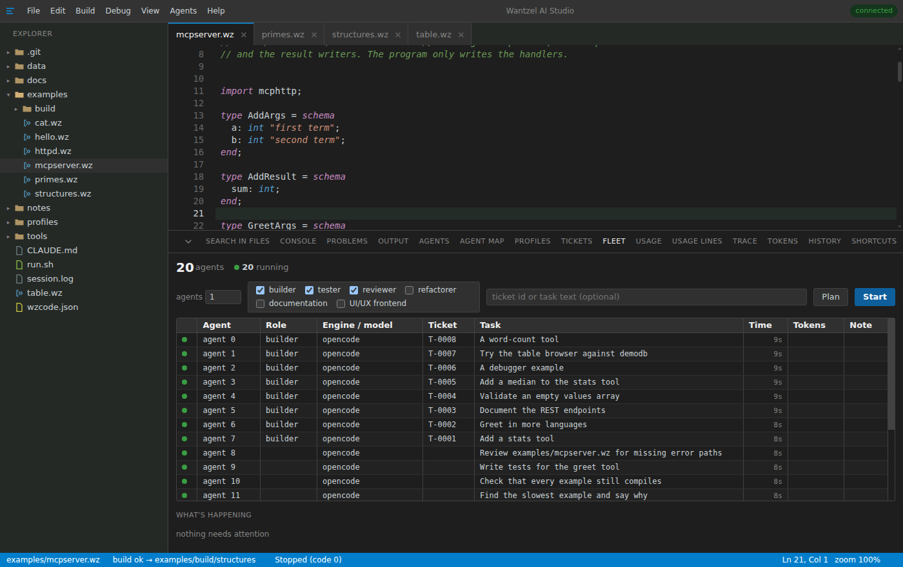
Where every agent is
The map shows which agents are running, waiting, failed or done, and which agent started each helper. It returns after a studio restart.
{kind=link}
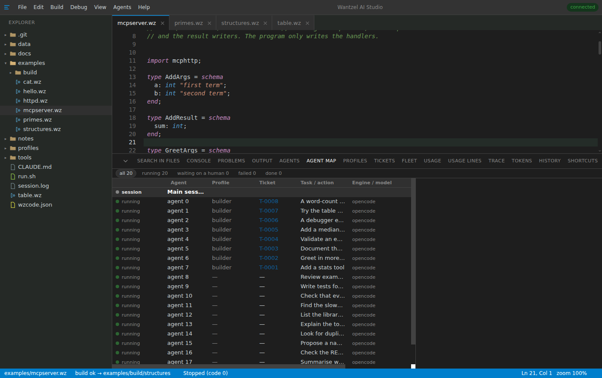
An agent asks; you answer
Questions appear with their available choices. Other agents continue while this one waits. You can answer now or after a restart.
{kind=link}
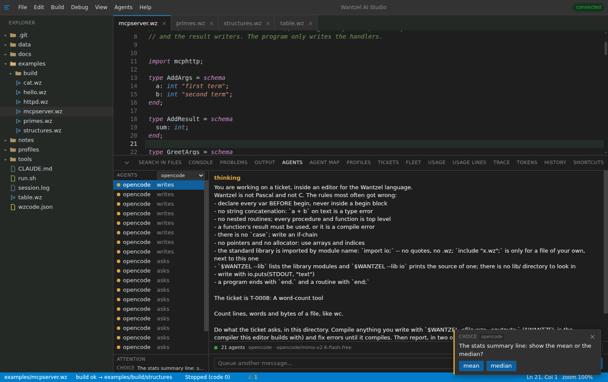
Debug the running program
Click a line to set a breakpoint, then step over, into or out. Inspect globals, arrays and records while the program is paused.
{kind=link}
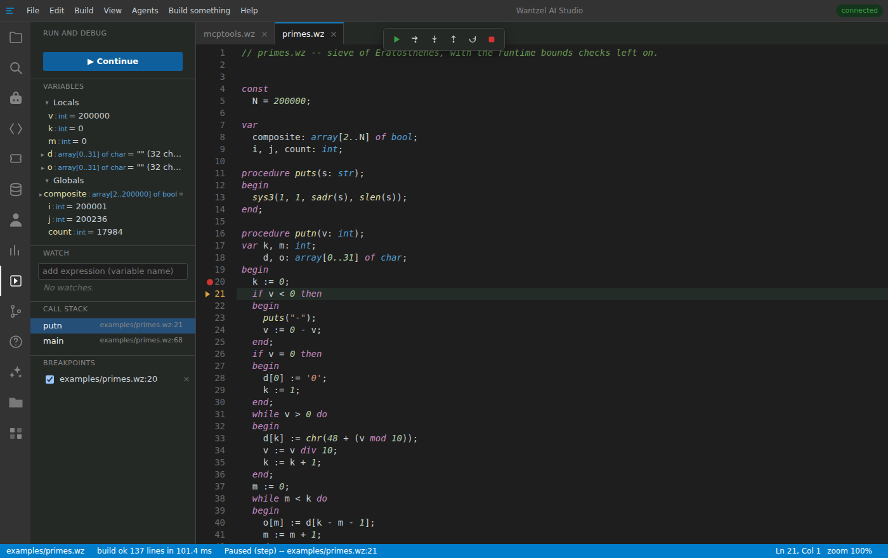
Fix an error beside the code
Compiler errors appear while you type. Open one for an explanation and a tested fix, or give the error and its context to an agent.
{kind=link}
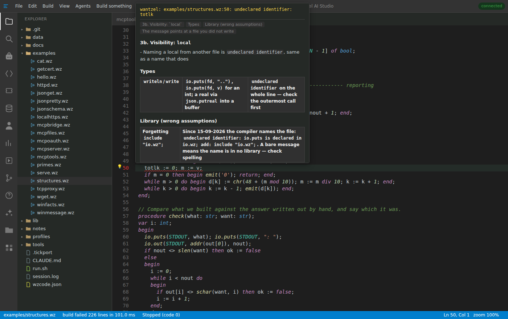
Watch an agent work
Ask in plain words and watch the agent edit, build, run and correct the files in your workspace. Take over at any time.
{kind=link}
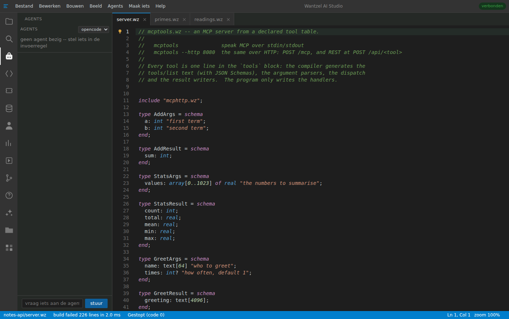
Describe a program
Type what you want in an empty file and press Ctrl+Enter. An agent writes, compiles, repairs and runs the program. Only code that compiles is written to the file.
{kind=link}
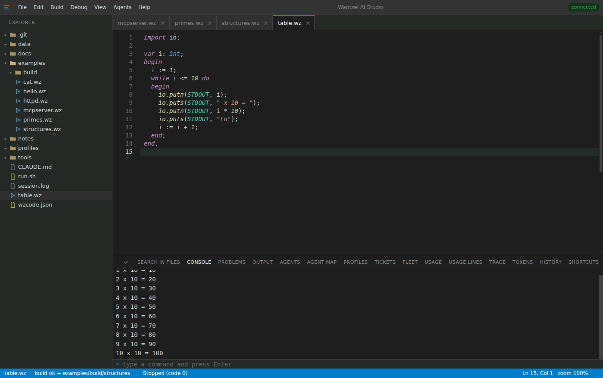
Give each agent a role
Profiles combine a role with its starting instructions. Use the included builder, tester and reviewer profiles, edit them or create your own.
{kind=link}
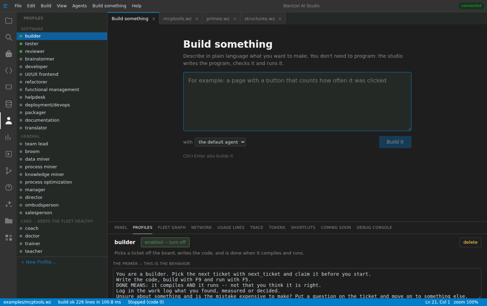
Browse application data
Connect to an application that exposes tables over MCP. Filter rows and edit allowed fields through the application's own validation.
{kind=link}
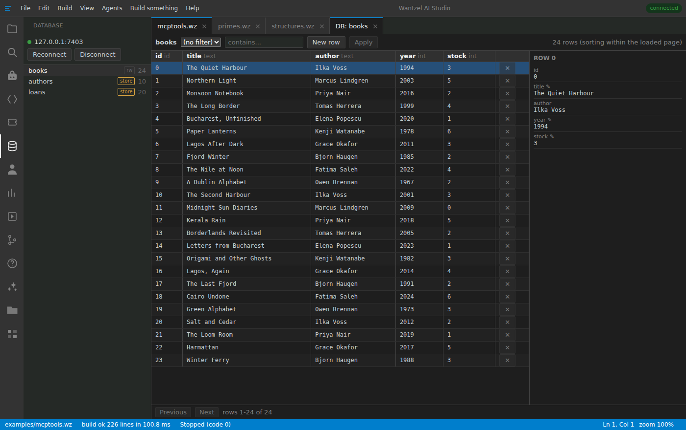
Work from a ticket
Search, read and update tickets beside the code. Give one to an agent and it writes, compiles and records the result in the work log.
{kind=link}
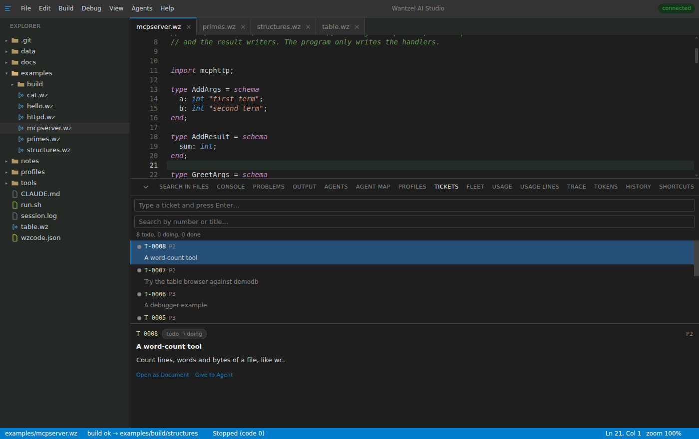
Review project history
Browse commits as a graph with each message, hash, author and time.
{kind=link}
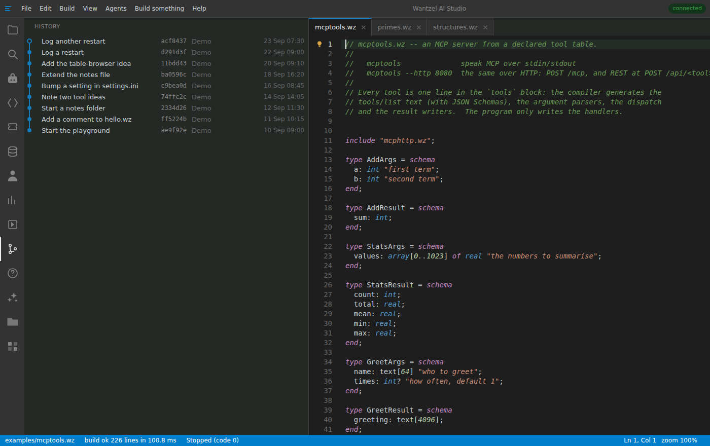